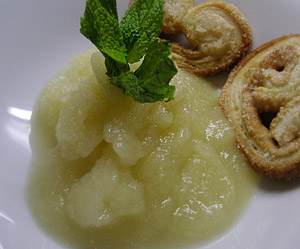

Birnensorbet
4,5 von 6200 Gramm Zucker in 2 dl Wasser aufkochen. 1 kg weiche, geschälte Birnenstücke hineinlegen und etwas einkochen, abkühlen lassen. Den Saft und die Schale einer Zitrone beigeben und das ganze pürieren. Einen Schluck Grappa darunter ziehen. In einer Glacemaschine zu einem Sorbet verarbeiten.
